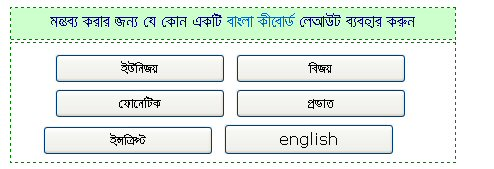

|
|
|
|
|
|
|
|
|
|
|
|
|
|
||||||||||||||||||||||||||||||||||||||||||||||||||||||||||||||||||||||||||||||||||||||||||||||||||||||||||||||||||||||||||||||||||||||||||||||||||||||||||||||||||||||||||||||||||||||||||||||||||||||||||||||||||||||||||||||||||||||||||||||||||||||||||||||||||||||||||||||||||||||||||||||||||||||||||||||||||||||||||||||||||||||||||||||||||||||||||||||||||||||||||||||||||||||||||||||||||||||||||||||||||||||||||||||||||||||||||||||||||||||||||||||||||||||||||||||||||||||||||||||
|
|
||||||||||||||||||||||||||||||||||||||||||||||||||||||||||||||||||||||||||||||||||||||||||||||||||||||||||||||||||||||||||||||||||||||||||||||||||||||||||||||||||||||||||||||||||||||||||||||||||||||||||||||||||||||||||||||||||||||||||||||||||||||||||||||||||||||||||||||||||||||||||||||||||||||||||||||||||||||||||||||||||||||||||||||||||||||||||||||||||||||||||||||||||||||||||||||||||||||||||||||||||||||||||||||||||||||||||||||||||||||||||||||||||||||||||||||||||||||||||||||||
|
|
|
কিভাবে বাংলায় মন্তব্য করব?
বাংলায় মন্তব্য করা খুবই সোজা। ইউনিকোডে বাংলায় লেখার জন্য (অনলাইন কিংবা অফলাইনে) সবচেয়ে ভাল টুল হচ্ছে অভ্র। যে কোন সময় বাংলায় লেখার জন্য আপনাকে অভ্র বাংলা কিবোর্ড টুলটি ব্যবহার করতে পরামর্শ দিচ্ছি। অভ্র বাংলা কিবোর্ড টুল ডাউনলোড করুন এখান থেকে। যদি অভ্র ব্যবহার করতে না চান তাহলে আমাদের বাংলা কীবোর্ড লে আউট প্যানেলটি সরাসরি ব্যবহার করতে পারেন -  আপনি যে বাংলা কীবোর্ডের সাথে পরিচিত সেই বাটনে চাপ দিয়ে মন্তব্যের ঘরে লেখা শুরু করে দিন। যেমন আপনি যদি বিজয় কিবোর্ডের সাথে পরিচিত হন, তাহলে 'বিজয়' বাটনে চাপ দিয়ে মন্তব্যের ঘরে মন্তব্য করুন। আপনি যদি ফোনেটিক কীবোর্ডের সাথে পরিচিত থাকেন তাহলে আপনাকে মন্তব্য করার আগে চাপ দিতে হবে ফোনেটিক বাটনে। ইত্যাদি। নীচে বাংলা কীবোর্ডের বিভিন্ন লে আউটগুলো দেখানো হল - ইউনিজয় কিবোর্ড লেআউট
|
||||||||||||||||||||||||||||||||||||||||||||||||||||||||||||||||||||||||||||||||||||||||||||||||||||||||||||||||||||||||||||||||||||||||||||||||||||||||||||||||||||||||||||||||||||||||||||||||||||||||||||||||||||||||||||||||||||||||||||||||||||||||||||||||||||||||||||||||||||||||||||||||||||||||||||||||||||||||||||||||||||||||||||||||||||||||||||||||||||||||||||||||||||||||||||||||||||||||||||||||||||||||||||||||||||||||||||||||||||||||||||||||||||||||||||||||||||||||||||||
| ক | খ | গ | ঘ | ঙ | চ | ছ | জ | ঝ | ঞ | ট | ঠ | ড | ঢ | ণ | ত | থ | দ | ধ | ন | প | ফ | ব | ভ | ম |
| k | K | g | G | M | c | C | j | J | & | t | T | d | D | n | f | F | q | Q | N | p | P | b | B | m |
| য | র | ল | শ | ষ | স | হ | ৎ | ড় | ঢ় | য় | ঁ | ং | ঃ | |||||||||||
| Z | r | l | x | S | s | h | * | R | X | z | > | : | H |
| অ | আ | া | ই | ি | ঈ | ী | উ | ু | ঊ | ূ | এ | ে | ঐ | ৈ | ও | ো | ঔ | ৌ | ঋ | ৃ |
| A | v | a | I | i | E | e | U | u | W | w | y | [ | Y | { | o | ] | O | } | V | < |
| যুক্ত | হসন্ত | র-ফলা | ব-ফলা | য-ফলা | রেফ | zwj | zwnj | । | ॥ |
| / | /- | /r | /b | /Z | r/ | ` | ~ | . | | |
ফোনেটিক কিবোর্ড লেআউট
| ক | খ | গ | ঘ | ঙ | চ | ছ | জ | ঝ | ঞ | ট | ঠ | ড | ঢ | ণ |
| k | kh/K | g | gh/G | Ng | c/ch | C | j | jh/J | NG | t | th | d | dh | N |
| ত | থ | দ | ধ | ন | প | ফ | ব | ভ | ম | য | র | ল | ||
| T | Th | D | Dh | n | p | ph/f | b | bh/v | m | z | r | l | ||
| শ | ষ | স | হ | ৎ | ড় | ঢ় | য় | ঁ | ং | ঃ | ||||
| sh | S | s | H | tt | R | Rh | y | NN | ng | HH |
| অ | আ | া | ই | ি | ঈ | ী | উ | ু | ঊ | ূ |
| ao | A | a | I | i | II | ii | U | u | UU | uu |
| এ | ে | ঐ | ৈ | ও | ো | ঔ | ৌ | ঋ | ৃ | |
| E | e | OI | oi | O | o | OU | ou | WR | wr |
| যুক্ত | হসন্ত | র-ফলা | ব-ফলা | য-ফলা | রেফ | zwj | zwnj | । | ॥ |
| + | + | +r | +b/+w | Y | r+ | ~ | ` | . |
বিভিন্ন বিষয়ে আরো সাহায্যের জন্য দেখুন ব্লগের প্রায়শ জিজ্ঞাস্য বা সাহায্য পাতাটি।